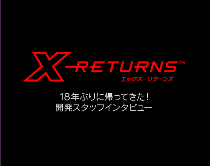
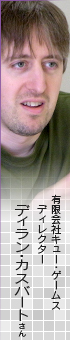
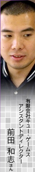
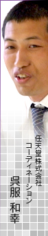
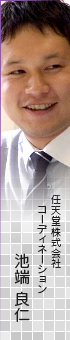

ディラン
元々『X』は「スペースアドベンチャー」というコンセプトで、シンプルだけど同じことばかりじゃなく、惑星によって違うというのがテーマだったんです。あと、テキストから深みのあるストーリーを感じてもらいたいというのも。それは、私が80年代の3Dゲームの「ストイックなSF」というイメージが好きで、その影響が大きかったからです。
N.O.M
一度に見るテキスト量は多くはないけれど、広がりがありますよね。
ディラン
説明しすぎないほうが、想像力が働くんじゃないかなと。SF的なバックグラウンドを味わってもらえるよう、意識していました。
前田
『X-RETURNS』でも、ナビゲーターのVIX-529というメカが示す場所をチェックすると、オブジェクトや惑星の情報を引き出すことができます。ゲーム中のメニューでも、その惑星の基本情報というか「宇宙の歩き方」みたいなものが書かれてますね。
自分で積極的に情報を集めて、頭の中で組み立てる、クラシカルなアドベンチャーを楽しめるゲームになっています。
ディラン
気にならなかったら無視しちゃっても進めますし（笑）。でも、気にしてもらえたらうれしいなという部分ではありますね。ミッションで少し出てきただけの名前でも、調べると情報が入るようになっているので、さらに深く楽しむこともできます。
呉服
単色を使った大胆なグラフィックも、プレイヤーに情報を与えすぎないという意味では、ゲーム性に貢献していると思いますね。
ディラン
やっぱり自分の目で見て何かを見つけたり、探したりするのがいいなと。
『X-RETURNS』も、そういうミニマリズムを考えて作っています。
N.O.M
『X』は2色で統一されていますが、今回の『X-RETURNS』はカラフルですよね。
ディラン
色については最初のデモ画面からかなり斬新な、「アンリアル」というか、抽象的な色にしています。
今回は特に太陽の方向を感じてほしいです。すべての建物にきつめにライティング（光をあてること）をしていて、影もすごく長くしています。北を向くとシェーディング（陰影）がハッキリと出て、立体を感じることができると思います。逆に、南を向くと建物の影しか見えなくなって、立体感のない不思議で非現実的な世界に見える。その落差を味わってほしいですね。
N.O.M
月の表面に太陽光があたるところや、砂漠を想像するとイメージに近いですかね。
ディラン
そうですね。惑星が増えてきて使う色の数を増やすと、今度は惑星同士の区別がつかなくなってくるので、あえて使う色の数を減らしています。敵だけはちょっと違う色にして目立つようにしていますが。今回のデザインでは、そういうルールにこだわって配色しています。
呉服
惑星で使われる色を絞ったことによって、その惑星のテーマカラーがハッキリと出ましたね。惑星の名前は覚えられなくても、色で覚えてるんですよ。
ディラン
途中にアース（Earth）もあったりします。
呉服
アースのテーマカラーは青と緑ですが、この組み合わせはきれいなんだなと素直に思えますね（笑）。プレイしていてすごく安心しました。
前田
最初、デザイナーさんに色を考えてもらったんですが、きれいな色になっちゃうんです。それだとインパクトが足りないということで、色を完全にランダムに選んだりしました。
ディラン
やっぱりデザイナーさんでも、自分の好きな色を使う傾向があって、同じような感じになってしまうんですね。でも、「何これ！」っていう感じにしたかったので（笑）。
池端
確かに、はじめて見たときはびっくりする惑星もありました。でも、さすがにゲームをプレイするうえで、あまりに見づらいものは調整してもらいました（笑）。